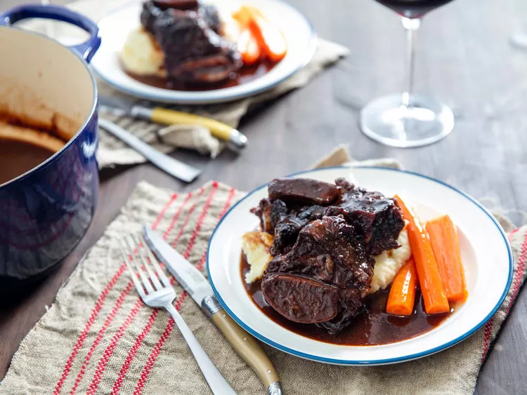

Back to Recipes
Braised Short Ribs

Description
A delicious beef short ribs recipe from Serious Eats. This recipe is perfect for
a cozy dinner party or a special occasion. The meat is tender and flavorful, and the sauce is rich and savory. I served it
with a side of creamy mashed potatoes and my favorite brussels sprouts.
Ingredients
- 5 pounds (2.3 kg) beef short ribs
- Kosher salt and freshly ground black pepper
- 1 tablespoon (15 ml) vegetable or other neutral oil
- 2 celery ribs (about 3 1/2 ounces; 100 g each), cut into 1/2-inch dice
- 2 large carrots (about 8 ounces; 225 g each), cut into 1/2-inch dice
- 1 large (14-ounce; 400 g) yellow onion, cut into 1/2-inch dice
- 5 medium cloves garlic, smashed
- 2 tablespoons (30 ml) tomato paste
- 1 (750 ml) bottle dry red wine
- 1 quart (940 ml) good-quality brown beef stock, brown chicken stock, white chicken stock, or store-bought chicken stock (see note)
- 1 packet unflavored gelatin, such as Knox (2 1/2 teaspoons; 10 g), only if using store-bought stock
- 4 sprigs fresh thyme
- 2 bay leaves
- 1 (750 ml) bottle ruby port wine
- Slurry made from 1/2 teaspoon cornstarch mixed with 1 teaspoon water (optional)
Instructions
- Preheat oven to 300°F (150°C). Season short ribs all over with salt and pepper. Heat oil in a large Dutch oven over
medium-high heat until shimmering. Working in batches, add short ribs and brown on all sides, about 4 minutes per
side. Transfer browned short ribs to a platter and repeat with remaining short ribs.
- Pour off all but 2 tablespoons of fat from the Dutch oven. Return to the heat and add celery, carrot, onion, and
garlic. Cook, stirring, until browned, about 6 minutes. Stir in tomato paste and cook for 1 minute longer; lower
heat at any point if the contents of the pot threaten to burn.
- Add dry red wine, scraping up any browned bits from bottom and sides of pot. Bring to a simmer. Add stock; if using
store-bought stock, place it in a large bowl first and sprinkle all over with gelatin until bloomed, then add to
Dutch oven.
- Return short ribs to pot along with any accumulated juices, nestling them into braising liquids. Add thyme and bay
leaves, cover partially, then transfer to oven, and cook until beef is fork-tender, 2 to 3 hours.
- Meanwhile, in a large saucepan, bring port to a very gentle simmer, regulating heat to maintain that simmer. Cook,
uncovered, and reduce until syrupy, about 1 hour; should yield about 1/2 cup (120ml) in volume. Set aside.
- Carefully remove short ribs from pot and transfer to a clean platter (they will be very tender, so the bones may
slip out; try to hold them together as you transfer them). Tent with foil.
- Skim accumulated fat from surface of braising liquid and discard. Strain braising liquid through a fine-mesh
strainer set over a large heatproof bowl, pressing on solids to extract as much liquid as possible; discard solids.
- Rinse out Dutch oven, then return strained braising liquid to it. Return to heat and bring to a gentle simmer,
adjusting heat to maintain simmer. Simmer until braising liquid is reduced to 2 cups, about 1 hour; skim any foam
that accumulates on the surface as needed. Add port wine reduction to braising liquid.
- The sauce should be thick enough to coat the back of a spoon and leave a trail when you drag your finger through it.
If it's still a little thin, whisk in the cornstarch slurry and bring to a simmer until thickened slightly.
- Season sauce with salt and pepper to taste. Return short ribs to Dutch oven, spooning the sauce all over and around
them to glaze and rewarm. Serve.